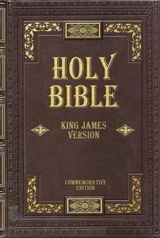
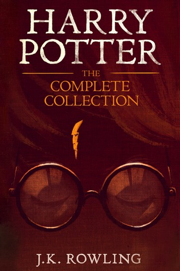

This page is dedicated to my favorite quotes from books I've read:)

- "Moreover, to endure labour; nor to need many things; when I have anything to do, to do it myself rather by others; not to meddle with many businesses; and not easily to admit of any slander."
- "True liberty, and unvariable steadfastness, and not to regard anything at all, though never so little, but right and reason: and always, whether in the sharpest pains ... to be still the same man."
- "A man without ever the least appearance of anger, or any other passion; able at the same time most exactly to observe the Stoic Apathia, or unpassionateness, and yet to be the most tender-hearted."
- "Ever of good credit, and yet almost without any noise, or rumour: very learned and yet making little show."
- "Always to hope the best; and to be confident that my friends love me."
- "Neither absolutely requiring of his friends, that they should wait upon him at his ordinary meals, nor that they should of necessity accompany him on his journeys."
- "His care to preserve his friends; how neither at any time he would carry himself towards them with disdainful neglect ... nor yet at any time to be madly fond of them."
- "His contented mind in all things, his cheerful countenance."
- "Moreover how all acclamations and flattery were repressed by him."
- "Without pride and bragging, yet with all freedom and liberty: so that as he did freely enjoy them without any anxiety or affectation when they were present; so when absent; he found no want of them."
- "How he was not easily moved and tossed up and down, but loved to be constant, both in the same places and businesses."
- "Not doing anything with such earnestness, and intention, that a man could say of him, that he did sweat about it."
- "We are born to be fellow-workers, as the feet, the hands, and the eyelids; as the rows of the upper and under teeth: for such therefore to be in opposition, is against nature."
- "Suffer it not any more, either to repine at anything now present, or to fear and fly anything to come, which the destiny hath appointed thee."

- "A man who is good for anything ought not to calculate the chances of living or dying; he ought only to consider whether in doing anything he is doing right or wrong."
- "For the fear of death is indeed the pretense of wisdom."
- "No one knows whether death, which men in their fear apprehend to be the greatest evil, may not be the greatest good."
- "I am not going to argue for my own sake, as you may think, but for yours, that you may not sin against the God by condemning me, who am his gift to you."
- "The unexamined life is not worth living."
- "I would rather die having spiken after my manner, than speak in your manner and live."
- "Either death is a state of nothingness and utter consciousness, or, as men say, there is a change and migration of the soul from this world to another."
- "For not caring about that which they ought to care, and thinking that they are something when they are really nothing."
- "The hour of departure has arrived, and we go our ways-I to die, and you to live. Which is better, God only knows."

- "Schools focus on scholastic and professional skills, but not on financial skills. This explains how smart bankers, doctors, and accountants who earned excellent grades may struggle financially all their lives."
- "My soon-to-be-rich dad would explain that by automatically saying the words 'I can't afford it', your brain stops working. By asking the question 'How can I afford it?' your brain is put to work."
- "Somewhere ages and ages hence; two roads diverged in a wood, and I-I took the one less traveled by, and that has made all the difference."
- "I would say that life is the best teacher of all. Most of the time, life does not talk to you. It just sort of pushes you around. Each push is life saying, 'Wake up. There's something I want you to learn.'"
- "You'll have lots of friends who really like you because you were such a nice hardworking guy. But the truth is that you let life push you into submission. Deep down you were terrified of taking risks. You really wanted to win, but the fear of losing was greater than the excitement of winning. Deep inside, you and only you will know you didn't go for it. You chose to play it safe."
- "If you realize that you're the problem, then you can change yourself, learn something, and grow wiser."
- "Every person has a weak and needy part of their soul that can be bought, and he knew that every individual also had a part of their soul that was resilient and could never be bought."
- "Be truthful about your emotions and use your mind and emotions in your favor, not against yourself."
- "Money only accentuates the cash-flow pattern running in your head."
- "There is always risk, so learn to manage risk instead of avoiding it."
- "There are extremely talented and educated people out there who do not earn as much money as they 'should'. Due to the fact that: they cannot sell their skills/abilities, are afraid of failure, cannot communicate/negotiate with others effectively."
- "People are so afraid of losing that they lose."
- "Some people stay lazy by staying busy. Rather than getting to the important task, they find excuses to get busy with unimportant, and less urgent work, that procastinates."
- "The greatest way to overcome laziness is to gain desire."
- "It's not that he wanted to lose. He just knew who he was and how he would take a loss. He would take a loss and make it a win."

- "I ignored my destiny once, I can not do that again. Even for you. I'm sorry little one."
- "The hardest choices require the strongest wills."
- "I know what it is like to lose. To feel so desperately that you're right, yet to fail, nonetheless. It's frightening, turns the legs to jelly. I ask you to what end? Dread it. Run from it. Destiny still arrives all the same. And now it is here. Or should I say, I am."
- "Perfectly balanced, as all things should be."
- "A small price to pay for salvation."
- "As long as there are those that remember what was, there will always be those that are unable to accept what can be. They will resist."

- "This foolish plan of God is wiser than the wisest of human plans, and God's weakness is stronger than the greatest of human strength. Remember, dear brothers and sisters, that few of you were wise in the world's eyes or wealthy when God called you Instead, God chose things foolish in order to shame those who think they are wise. And he chose things that are powerless to shame those who are powerful. God chose things despised by the world, things counted as nothing at all, and used them to bring to nothing what the world considers important."
- "Yet what we suffer now is nothing compared to the glory he will reveal to us later."
- "You may believe there is nothing wrong with what you are doing, but keep it between yourself and God. Blessed are those who don't feel guilty for doing something that they have decided is right. But if you have doubts about whether or not you should eat something, you are sinning if you go ahead and do it. For you are not following your convictions. If you do anything you believe is not right, you are sinning."
- "Those who weep or who rejoice or who buy things should not be absorbed by their weeping or their joy or their possessions. Those who use the things of the world should not become attached to them. For this world as we know it will soon come to pass away. I want you to be free from the concerns of this life."
- "If I gave everything I have to the poor and even sacrificed my body, I could boast about it; but if I didn't love others, I would have gained nothing."
- "How I praise the Lord that you concerned about me again. I know you have always been concerned for me, but you didn't have the chance to help me. Not that I was ever in need, for I have learned how to be content with whatever I have. I know how to live on almost nothing or with everything. I have learned the secret of living in every situation, whether it is with a full stomach or empty, with plenty or little. For I can do everything through Christ, who gives me strength."
- "If we die with him, we will also live with him. If we endure hardship, we will reign with him. If we deny him, he will deny us. If we are unfaithful, he remains faithful, for he cannot deny who he is."
- "Faith shows the reality of what we hope for; it is the evidence of things we cannot see."

- "Do not pity the dead, Harry. Pity the living, and, above all those who live without love."
- "It is the unknown we fear when we look upon death and darkness, nothing more."
- "It was, he thought, the difference between being dragged into the arena to face a battle to the death and walking into the arena with your head held high. Some people, perhaps, would say that there was little to choose between the two ways, but Dumbledore knew-and so do I, thought Harry, with a rush of fierce pride, and so did my parents-that there was all the difference in the world."
- "It is our choices that show what we truly are, far more than our abilities."
- "It does not do to dwell on dreams and forget to live."
- "It is a curious thing, Harry, but perhaps those who are best suited to power have never sought it. Those who, like you, have leadership thrust upon them, and take up the mantle because they must, and find to their surprise that they wear it well."
- "Of course it is happening inside your head, Harry, but why on earth should that mean that it is not real?"

- "How could you communicate with the future? It was of its nature impossible. Either the future would resemble the present, in which case it would not listen to him: or it would be different from it, and his predicament would be meaningless."
- "He felt as though he were wandering in the forests of the sea bottom, lost in a monstrous world where he himself was the monster. He was alone. The past was dead, the future was unimaginable. What certainty had he that a single human creature now living was on his side?"
- "He was a lonely ghost uttering a truth nobody would ever hear. But as long as uttered it, in some obscure way the continuity was not broken. It was not by making yourself heard but by staying sane that you carried on the human heritage."
- "But if the object was not to stay alive but to stay human, what difference did it ultimately make? They could not alter your feelings: for that matter you could not alter them yourself, even if you wanted to. They could lay bare in the utmost detail everything that you had done or said or thought; but the inner heart, whose workings were mysterious even to yourself, remained impregnable."
- "Never, for any reason on earth, could you wish for an increase of pain. Of pain you could wish only one thing: that it should stop. Nothing in the world was so bad as physical pain. In the face of pain there are no heroes, no heroes, he thought over and over as he writhed on the floor, clutching uselessly at his disabled left arm."
- "You believe that reality is something objective, external, existing in its own right. You also believe that the nature of reality is self-evident. When you delude yourself into thinking that you see something, you assume that everyone else sees the same thing as you. But I tell you, Winston, that reality is not external. Reality exists in the human mind, and nowhere else."
- "'But the world itself is only a speck of dust. And man is tiny-helpless! How long has he been in existence? For millions of years the earth was uninhabited.' 'Nonsense. The earth is as old as we are, no older. How could it be older? Nothing exists except through human consciousness.'"